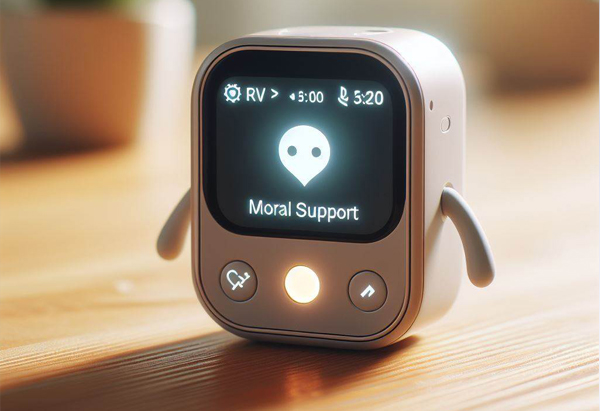

Moral Support Companion
BuddyBot is not just a machine; it's a companion that offers emotional support and companionship. Through empathetic responses and tailored interactions, BuddyBot helps users navigate life's challenges with positivity and encouragement.